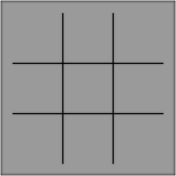
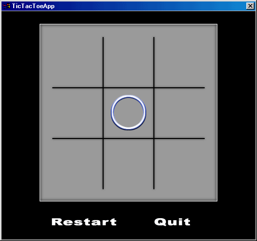

Simple Game Development with ClanLib 0.8Part 2The Game Loop and ClanLib Graphics
Every game needs a loop, or something to keep it alive and kicking (and painting). Without it, getting input and displaying graphics becomes either very linear or next to impossible. Our game loop needs to do three basic things with CL, in addition to the things your game needs to do like update and paint:
The flip() is a call to flip, or update the display buffers. sleep(10), although not a neccessary line, helps the program multitask well with other windows, giving them time to update and not hogging the system. The keep_alive() call allows CL to update itself and do things like handle Windows messages, gather input, etc. I tend to seperate my game code from my CL code where possible, so the game loop in code looks like this:
In our game, this loop will be included in the TicTacToeGame's run() function. So as soon as TicTacToeApp's main() function is executed, it should create an instance of TicTacToeGame, call run() and our game will be up and running. Now that we're created a framework for our new CL game we can start adding game elements. Foremost is something to look at, or our Tic-Tac-Toe game will be seriously suffering. This is the graphics set we'll be using for the game: Fig 4-7.

Some technical notes about using graphics. You can use JPEGs, PNGs, or a few other formats. I use Targa (TGA) format out of habit because it lets me save 32-bit targas including alpha channels for transparency. Another note about transparency and CL, is that you only want to use one one level of alpha value or you will take a significant performance hit. Here is a visual example of what I mean. Fig 8 is an alpha channel with one alpha value, Fig 9 is one with multiple levels of alpha transparency. So it's a tradeoff of looks for speed, but only if you need alpha blending. Fig 8 & 9.
Now that we have our graphics created, we need that TicTacToeGame class and member CL_Surface pointers to access them. CL handles the loading and storing of the graphics for us, so we simply need a pointer to access them.
The first function we'll write is the loadGraphics() one
The CL_Surface pointers now point at the graphics file we want to use. Painting them on the screen is a very simple operation - we simple say graphicPointer->put_screen(xCoordinate, yCoordinate).
So we have functions for loading and painting the graphics, all that remains is to fill in the run() function with a call to paint the screen, fill the constructor with a call to load the graphics, and create an instance of TicTacToeGame and run it inside the main() function of the TicTacToeApp class. 
A Tic-Tac-Toe board without any interactivity is pretty dull. In the next part we'll look at how to add input through CL.
|